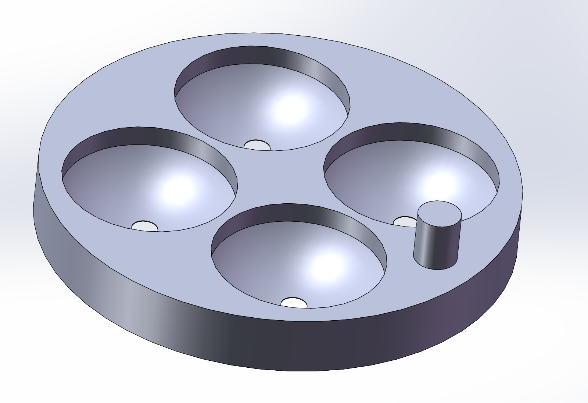
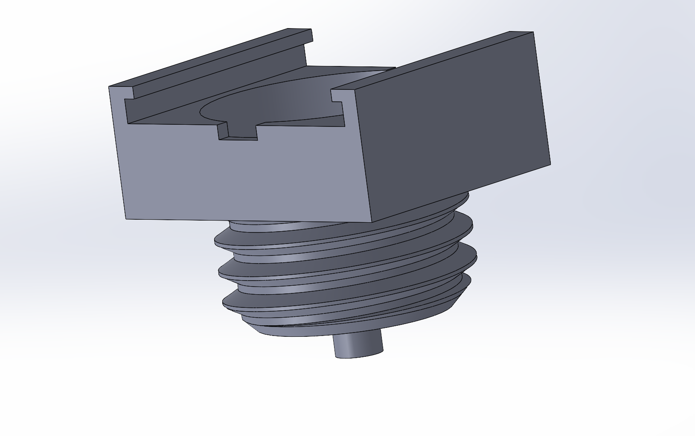
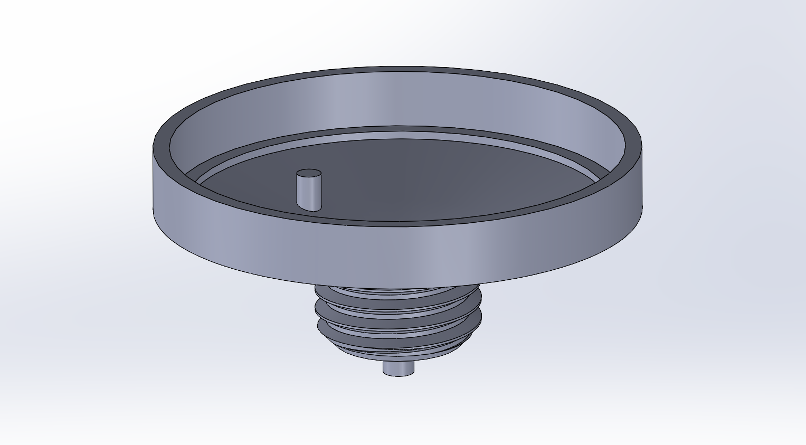
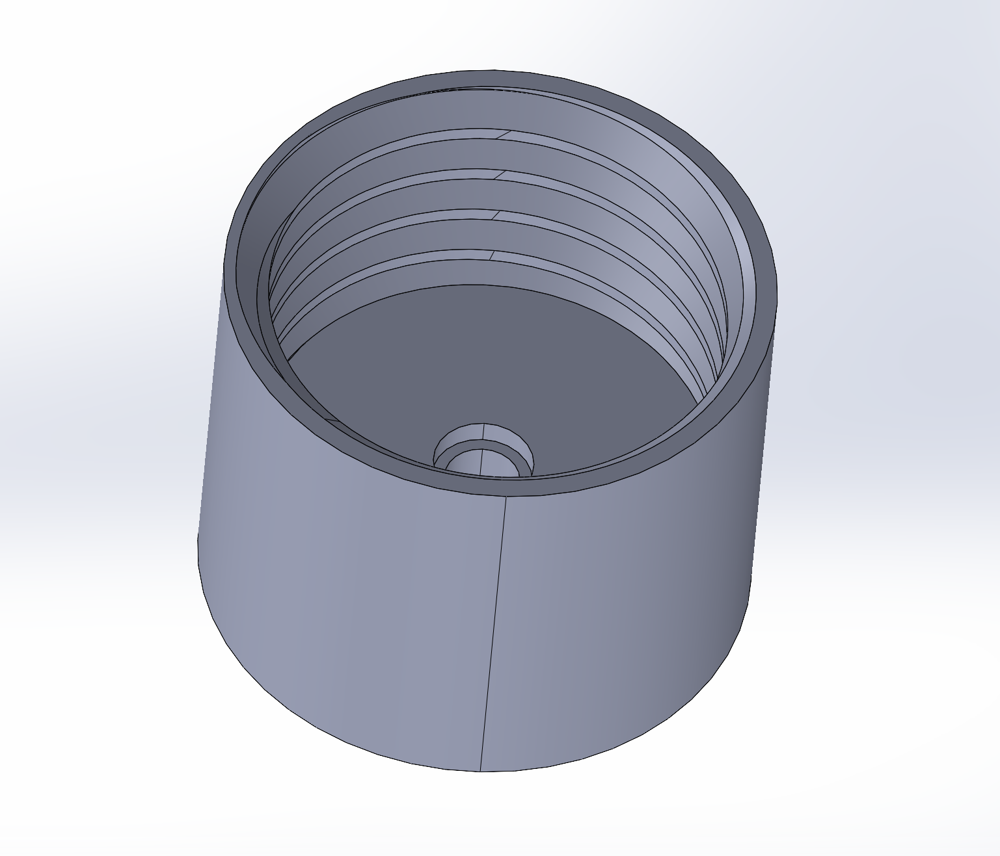

← Research / Project 03
A Rotational Redesign of the VLEAD Sample Preparation Device
VLEAD runs lysis, paper-based RNA enrichment, and amplification inside one device. The published version works, but it works in a lab: milled polycarbonate, adhesive tape, and a slide that has to be lined up by a trained hand. This redesign turns the whole sequence into a twist.
Affiliation
- Principal Investigator
- Prof. Z. Hugh Fan
- Institution
- University of Florida
- Department
- Mechanical & Aerospace Engineering
- Group
- Interdisciplinary Microsystems Group
- Status
- Ongoing
Design goals
- Operation
- One rotation, no alignment
- Assembly
- No tape, no milled polycarbonate
- Paper handling
- Screw clamp
- Intended user
- Untrained operator
What VLEAD does
VLEAD is a valve-enabled device that carries a sample through chemical lysis, paper-based RNA enrichment, and nucleic acid amplification without the operator pipetting between steps. The reagents are held in separate wells and the paper is moved between them, so the order of operations is built into the mechanism rather than into a protocol someone has to follow correctly.
The version published by the Fan lab establishes that the chemistry works in this format. What it does not do is survive contact with a non-specialist. It is assembled from milled polycarbonate and adhesive tape, and the paper is advanced by sliding one layer across another, which means the person running it has to both align the layers and judge when a step is complete.
Underneath the packaging it is a low-cost platform for sequential reagent release using microfluidic ball valves. The goal is to run chemical lysis, RNA enrichment, and nucleic acid amplification as an ordered sequence inside a single device, enabling multiplexed detection of HIV, dengue, and Zika without an operator pipetting between steps. It is the same instinct as my work in London: replace a procedure that currently requires a trained hand with something the device does by itself.
What I changed
I rebuilt the device around rotation. The paper is clamped in a screw fitting and indexed between wells by turning a single part, which removes the alignment problem: a thread can only go one way, and the stops are geometric rather than judged by eye. The milled polycarbonate and the tape are both gone, replaced by printed parts that assemble without adhesive.
The point of the exercise is deployment. A device that needs a trained hand is a lab instrument no matter how good its chemistry is, so most of the design effort has gone into removing the places where an operator can get it wrong rather than into the assay itself.
The parts that replaced the slide

The reagent wells sit in a single printed disc. Each well is a hemispherical pocket with a through-hole at its base, and an alignment pin sets the disc's orientation relative to the rest of the stack, so the sequence the paper visits is fixed at assembly rather than chosen during the run.
Above it, a threaded cap carries the paper. Tightening the cap clamps the paper against its seat, and turning the assembly is what carries the paper from one well to the next. Everything that used to be a tape joint or a hand-aligned sliding face is now either a thread or a printed feature.




- Design
- SolidWorks
- Fabrication
- 3D printing
- Testing
- Dye-based bench trials
- Reporting
- Monthly written reports
Where it stands
The current build has been run on the bench with dye standing in for reagent, which is enough to show that the rotation indexes cleanly, that the clamp holds the paper, and that liquid goes where the geometry says it should. It is not yet enough to say anything about the assay. Running the real chemistry through the redesigned device, and doing it enough times to speak about repeatability, is the next step.
The open questions are the ordinary ones for a printed device that has to seal. Print tolerance sets how well the clamp seats, the wells have to empty without leaving volume behind, and a mechanism that is easy to turn is also easy to over-turn, so the stops need to be firm enough that an operator feels them. None of these is a reason the approach will not work, but each one is a reason the first build is not the last.
Contact
- noah.haeske@ufl.edu
- Phone
- 407-705-9895
- Resume
- Download PDF